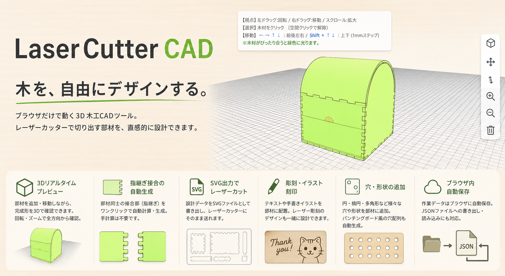
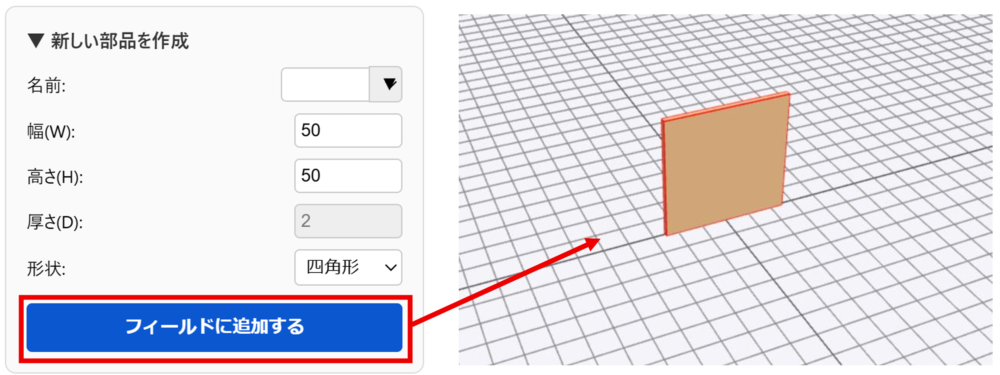
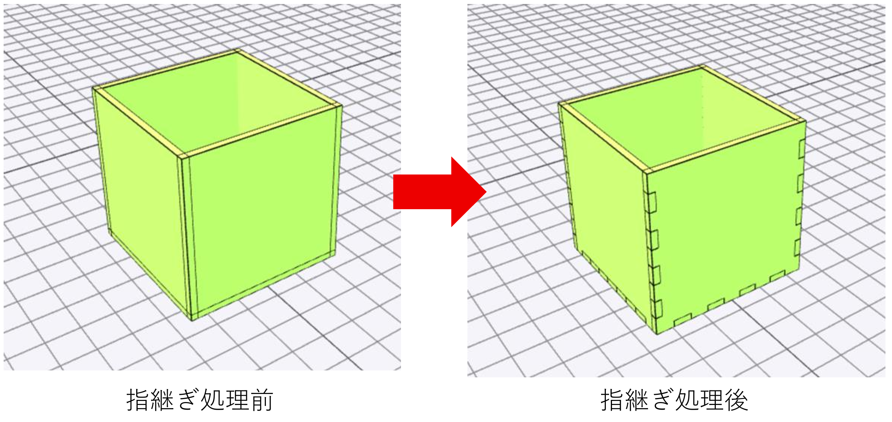
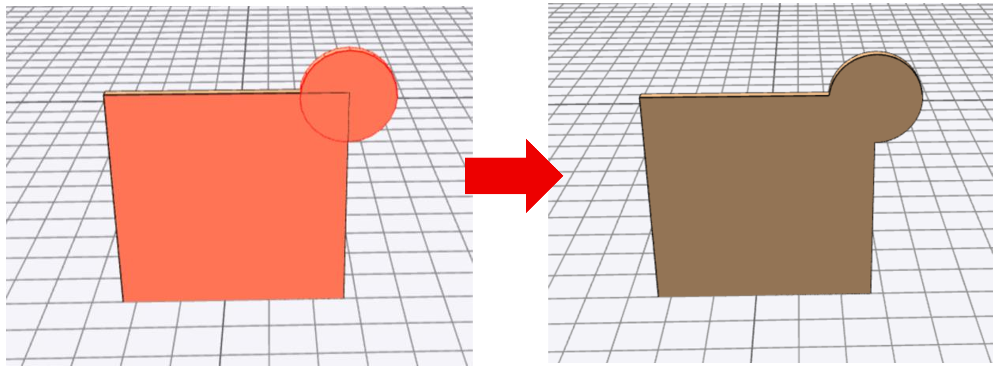
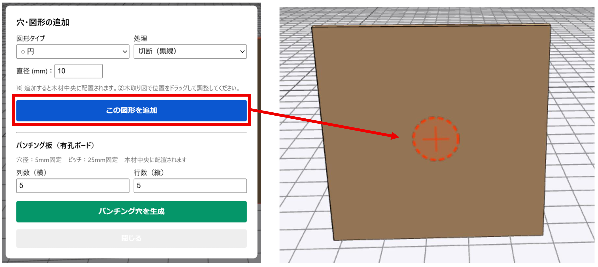
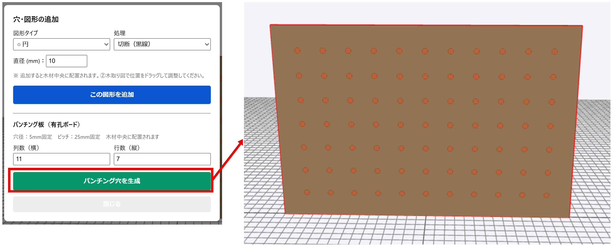
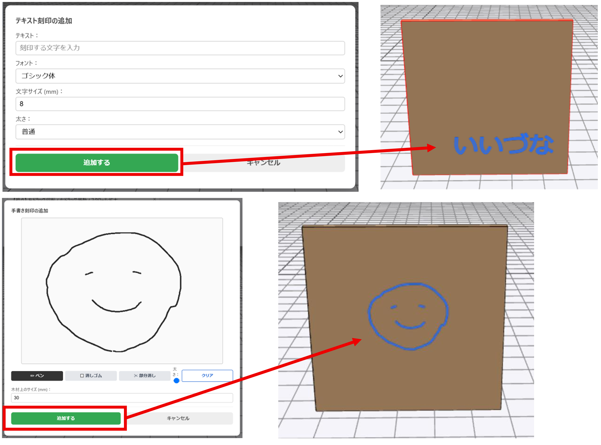
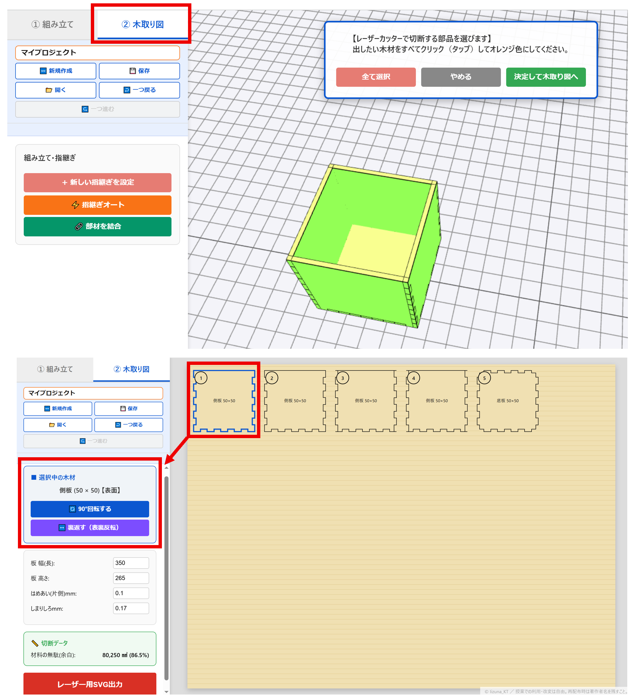
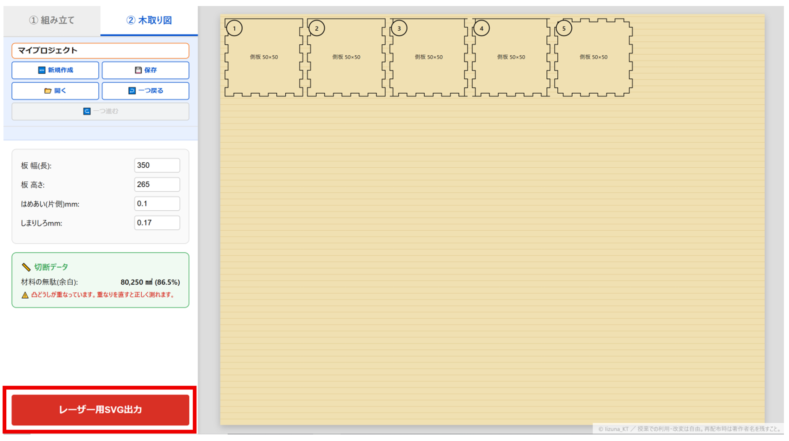
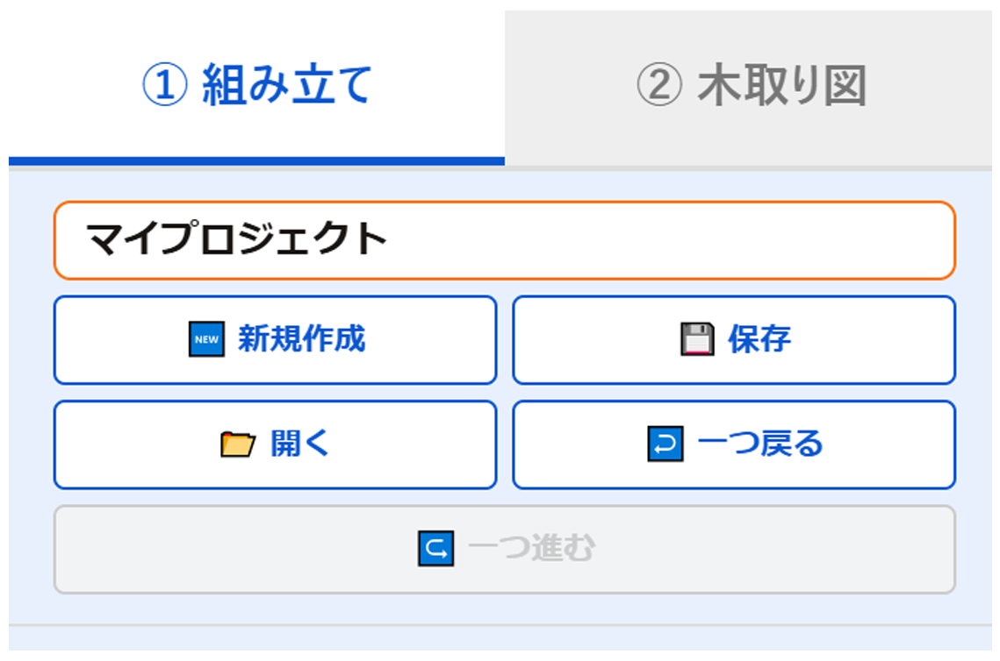

Works
作品例
LaserCutter CADで設計できる作品の例です。


How to Use
難しい操作は必要ありません。順番に進めるだけで、レーザーカット用のデータが完成します。
左パネルの「▼ 新しい部品を作成」を開き、形状（四角形・アーチ・カーフ曲げなど）・幅(W)・高さ(H)・厚さ(D) を入力して「フィールドに追加する」を押します。追加した部品が3Dビューに表示されます。

板どうしを「凸（出っぱり）と凹（へこみ）」でかみ合わせる接合方法です。2通りの方法で設定できます。

2つ以上の部品を1枚の板としてまとめたいときは「◎ 部材を結合」を使います。L字形や複雑な形を1枚で切り出せます。

部品を選択して「穴・図形を追加」を押すと、板に穴や図形を追加できます。

同じ穴を規則正しくたくさん開けたいときは「パンチング穴を生成」を使います。有孔ボード（ペグボード）のような板を簡単に作れます。

板にテキストや手書き絵をレーザー彫刻用のデータとして追加できます。

上のタブで「② 木取り図」に切り替えると、部品が平らに並んで表示されます。これが実際にレーザーで切り出す形です。

「② 木取り図」画面の左パネル下にある「レーザー用SVG出力」ボタンを押すと、SVGファイルがパソコンに保存されます。


Works
LaserCutter CADで設計できる作品の例です。
Notice